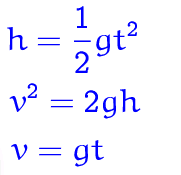

Image we are dropping an object from a tower with given height on earth’s surface, how long will it take to hit the ground? The time needed is dependent on how fast the object is falling, which is its velocity. When the object is held in hand on the tower, its velocity is zero. When we drop it, its velocity starts increasing with due to acceleration.
Let’s start from the simplest condition. As we learnt from our physics classes, an object that falls through a vacuum is subjected to only one external force, the gravitational force, which is measured as the weight of that object. According to Newton’s second law of motion, Fnet = m • a, acceleration is produced when a force acts on the object. We can solve the gravitational acceleration when we have the weight of the object. Once we get the value of acceleration, according to free fall formulas:
We already know the height of the tower, which is h, and the gravitational force, which is 9.80 m/s^2 in average. Then, we can get the time needed for this falling object.
Ready with a little quiz?
1, How much forces are acting on a falling object in a vacuum?
2. Name the forces acting on the object.
3. What is the average value of gravitational acceleration on Earth?
Question 1: The correct answer is A, Grativy.
Question 2: The correct answer is A, 10m/s^2.
Question 3: The correct answer is D, 9.8m/s^2.
You answered them all right!
Then we need to consider the rotation of earth. Assuming we are on the north hemisphere, centripetal force will affect the acceleration. In this new frame, we need to include a rotational velocity ω. When an object is rotating, there will be a centrifugal force pointing away from the center of the earth. Therefore, the gravitational force experienced by the object will be reduced. The conversion from rotational velocity to linear velocity is v = ωr, in which v stands for linear velocity and ω stands for rotational velocity. If we stand at the base of the tower, r would be the perpendicular distance from the surface to the axis of rotating earth. But when we consider the object held on the top of the tower, r would be the sum of that distance and height of the tower on that direction. With greater r but same ω, thus, the initial linear velocity for the object is greater than that of the base of the tower. As earth is moving from east to west, with greater linear velocity, the object is moving faster towards east than the base of the tower. After it is dropped, no more force will be given to it horizontally. Therefore its linear velocity will stay constant before landing. As a result, the object will land on the east relative to the tower. The distance from the position of object landed to the tower base is dependent on the horizontal movement of the object. How far it moves horizontally depends on the time it spends in the air before landing. The further it stays in the air, the easter it will move. Generally, dropped from higher tower will result in further horizontal movement of the object.
Finally, there is one more force to be considered, the Coriolis effect. This effect is under consideration if we allow north-south movement of the object. Coriolis force is also an effect due to the rotation of the Earth. Coriolis effect is the deflection of moving objects relative to a rotating reference frame. In clockwise rotation, the deflection would lead the object to the right. While in counter clockwise rotation, the deflection would lead the object to the left. If we drop the object on the north hemisphere to its north direction, the Coriolis effect would make it bend to the right. While drop it on the south hemisphere to its north direction would cause the object bend to the left. The formula needed to calculate Coriolis effect is v = dr/dt = dr/dt + ω X r. The velocity, which is the rate of changing position vector r, is dr/dt. Including Coriolis effect we should add a cross product of angular velocity and position vector r.